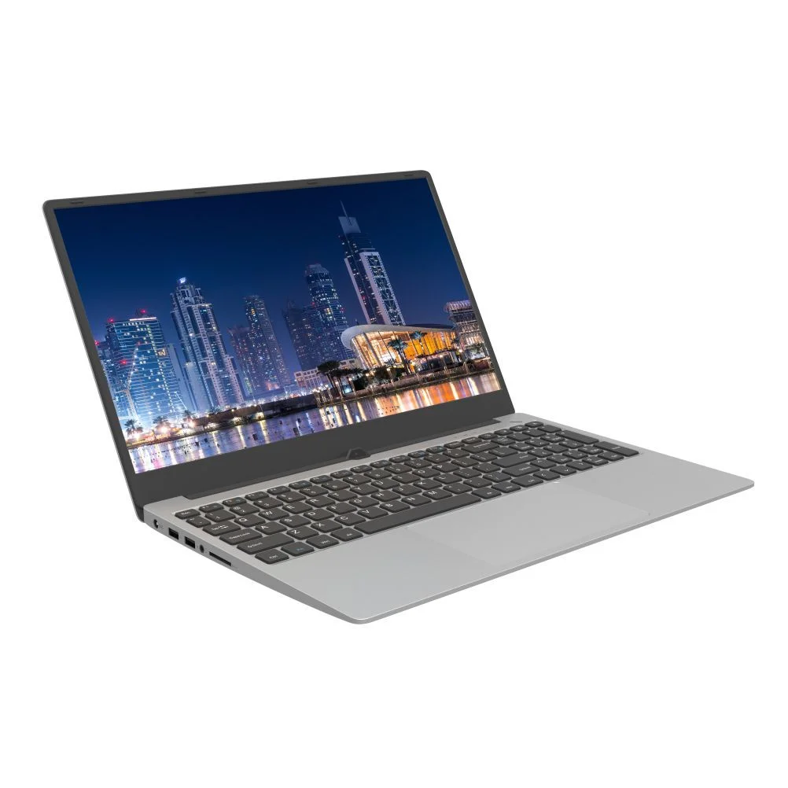
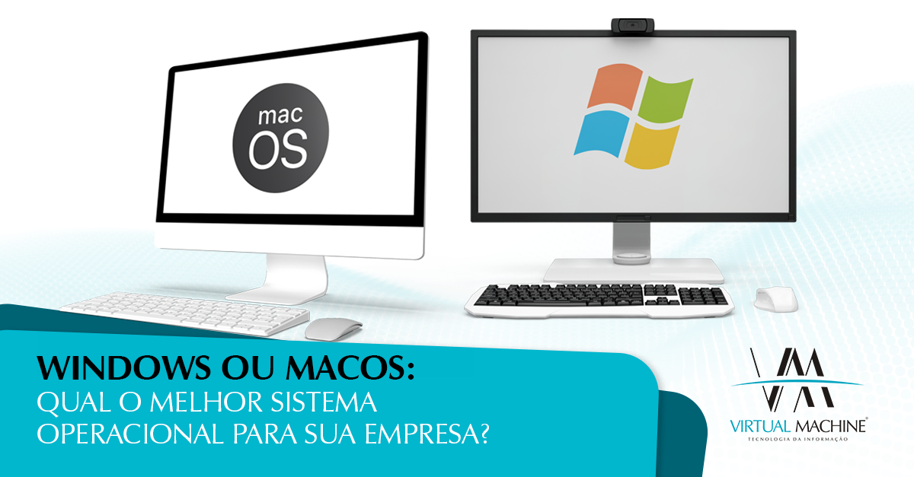
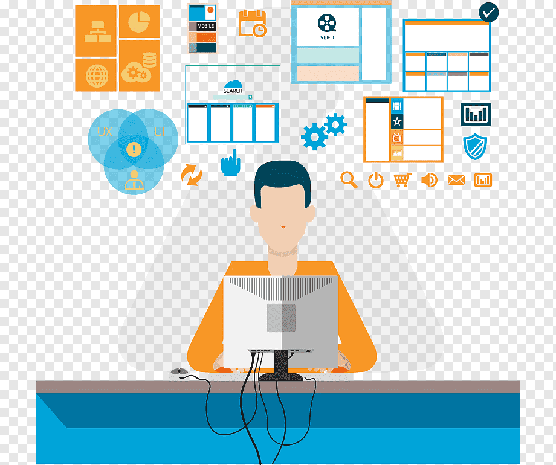
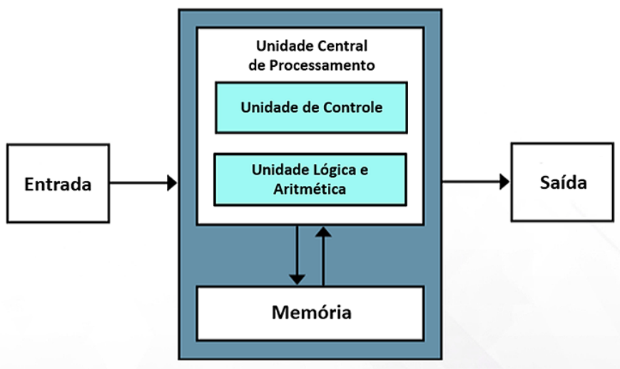
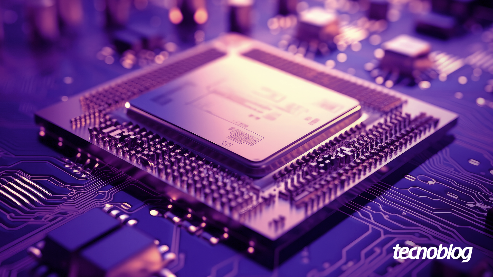
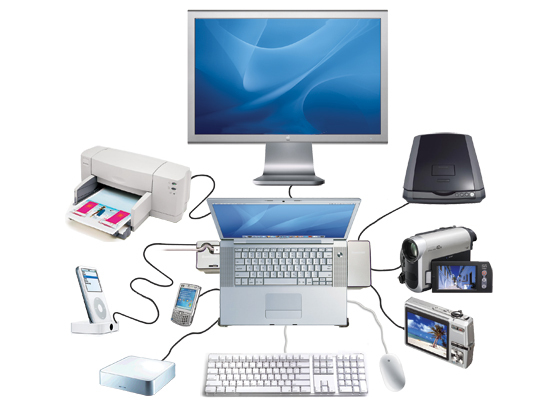
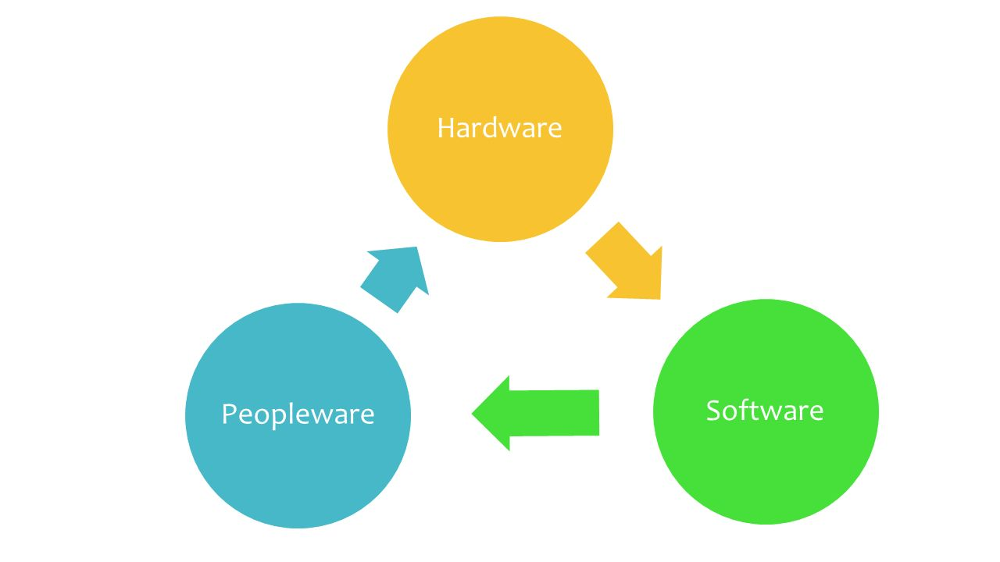

Disciplinas
-
SISTEMAS COMPUTACIONAIS. Concluído
Materiais
Vídeo 1 - 02 Hardware X Software. sendProf° ministrante: Nilson Mori.
Conteúdo
Hardware X Software.
Conceitos Fundamentais.
Hardware e Software.
"Sendo uma máquina, o computador é construído de diversos componentes físicos, desde os menores, na escala de nanômetros [...], a outros maiores" [1].
- Chamamos de Hardware 0 “equipamento propriamente dito, incluindo os periféricos de entrada e saída; a máquina, seus elementos físicos: carcaças, placas, fios, componentes em geral" [2].
"Em Inglês, hardware significa ferragens. Qualquer ferramenta como uma chave de parafuso ou mesmo uma peça como um parafuso é hardware; em inglês, uma loja de ferragens é uma hardware store. No entanto em português, somente usamos essa palavra para identificar material de computador" [1].
"Os computadores são muito bons em armazenar informações e fazer cálculos, mas não são capazes de tomar decisões sozinhos. Sempre existe um ser humano orientando o computador e dizendo a ele o que fazer a cada passo. Seja você mesmo, teclando e usando o mouse, ou, num nível mais baixo, o programador que escreveu os programas que você está usando" [3].
https://www.brazilpc.com.br/notebook-com-intel-i5-8gb-ram-hd-500gb-tela-156-prata "Chegamos então aos softwares, gigantescas cadeias de instruções que permitem que os computadores façam coisas úteis" [3].
"Essas instruções, que podem ser ordenadas de formas diferentes (e, consequentemente, produzir resultados diferentes), foram denominadas software, em oposição ao termo hardware" [1].
"O termo hardware é uma palavra original da língua inglesa, de uso comum [...]. Porém, o termo software surgiu na época dos computadores, para indicar o elemento que comanda as atividades do hardware, a sua programação, suas instruções e que podem facilmente ser alteradas manualmente" [1].
"O termo inglês soft é o antônimo de hard e significa macio. Ou seja, o hardware é difícil de manipular, de alterar, enquanto o software não" [1].
"O software é constituído pelos programas que lhe permitem atender às necessidades dos usuários. O software abriga programas fornecidos pelos fabricantes do computador e programas desenvolvidos pelo usuário. Assim, podem-se considerar: software do fabricante e software do usuário" [2].
https://stock.adobe.com/br/search?k=software
"No software do fabricante (produzidos pelas software- houses), destaca-se o sistema operacional, responsável pelo controle das operações do computador e de seus periféricos, proporcionando a alocação e a otimização de recursos operacionais" [2].
"Um bom sistema operacional é invisível. A função dele é detectar e utilizar o hardware da máquina de forma eficiente, fornecendo uma base estável sobre a qual os programas que utilizamos no cotidiano possam ser usados" [3].
"O sistema operacional permite que o programador se concentre em adicionar funções úteis, sem ficar se preocupando com que tipo de placa de vídeo ou placa de som você tem. O programa diz que quer mostrar uma janela na tela e ponto; o modelo de placa de vídeo que está instalado e que comandos são necessários para mostrar a janela são problema do sistema operacional" [3].
"Para acessar a placa de vídeo, ou qualquer outro componente instalado, o sistema operacional precisa de um driver, que é um pequeno programa que trabalha como um intérprete, permitindo que o sistema converse com o dispositivo. Cada placa de vídeo ou som possui um conjunto próprio de recursos e comandos que permitem usá-los. O driver converte esses diferentes comandos em comandos padrão, que são entendidos pelo sistema operacional" [3].
https://www.virtualmachine.com.br/blog/wp-content/uploads/2023/05/blog-1-7.png “Software do usuário: Programas preparados pelo usuário para atingir os objetivos específicos de sua organização.
O usuário ou alguém atendendo às suas necessidades constrói programas para finalidades específicas: controle de pessoal, de material, de finanças etc" [3].
https://www.pngwing.com/pt/free-png-igwqg "O hardware é constituído por elementos básicos, ditos unidades funcionais básicas: unidade central de processamento, memória principal e unidades de entrada e saída (E/S)" [2].
https://files.passeidireto.com/72172854-c1ea-4f8b-ba4d-ff65cac9c857/bg1.png O processador (Unidade Central de Processamento), "é o cérebro do micro, encarregado de processar a maior parte das informações. Ele é também o componente onde são usadas as tecnologias de fabricação mais recentes.
O processador é o componente mais complexo е frequentemente o mais caro, mas ele não pode fazer nada sozinho. Como todo cérebro, ele precisa de um corpo, que é formado pelos outros componentes do micro, incluindo memória, HD, placa de vídeo e de rede, monitor, teclado e mouse" [3].
https://files.tecnoblog.net/wp-content/uploads/2023/06/cpu-processador-capa.png "Depois do processador, temos a memória RAM, usada por ele para armazenar os arquivos e programas que estão sendo executados, como uma espécie de mesa de trabalho. A quantidade de memória RAM disponível tem um grande efeito sobre o desempenho" [3].
"Os chips de memória são vendidos na forma de pentes de memória. Existem pentes de várias capacidades, e normalmente as placas possuem dois ou três encaixes disponíveis" [3].
https://bringit.com.br/blog/wp-content/uploads/2020/02/memoria-notebook-suporta.jpg
"As unidades de entrada e saída trabalham com os meios ou veículos próprios ao armazenamento e à transmissão de dados" [3].
https://conceitos.com/wp-content/uploads/2014/07/Dispositivo-entrada-saida.jpg "À parte física do sistema computador denominamos hardware. Aos programas, essenciais para a sua conveniente utilização na solução dos problemas, chamamos software. Ao pessoal, capaz de conduzir hardware e software, denominamos peopleware" [2].
https://slideplayer.com.br/slide/1246806/3/images/7/Hardware+Software+Peopleware.jpg Bibliografia
- [1] MONTEIRO, Mário A. Introdução à organização de computadores. Brasil, Grupo Gen - LTC, 2007 [2] VELLOSO, Fernando de Castro. Informática: conceitos básicos, vol. 9. Elsevier Brasil, 2014.
- [3] MORIMOTO, Carlos Eduardo. Hardware II, o guia definitivo. Porto Alegre: Sul Editores, 2010.
- [4] https://pixabay.com/pt/vectors/laptop-black-blue-tela-monitor-33521/
- [5] https://pixabay.com/pt/photos/c%c3%b3digo-codifica%c3%a7%c3%a3o-web-944499/
- [6] https://commons.wikimedia.org/wiki/File:Operating-system-white.svg [7] https://commons.wikimedia.org/wiki/File:Von_Neumann_Architecture.svg
- [8] https://www.maxpixel.net/Cpu-Chip-Board-Motherboard-Pc-Computer-Processor-4393376
- [9] https://www.maxpixel.net/Ram-Memory-Chips-Ram-Memory-Board-Memory-57269
- [10] https://www.maxpixel.net/Office-Pen-Mac-Keyboard-Table-Computer-Mouse-4532328
- [11] https://pxhere.com/pt/photo/1379202
- [12] https://commons.wikimedia.org/wiki/File:Operating_system_placement_(software).svg
- [13] https://pxhere.com/pt/photo/1437805